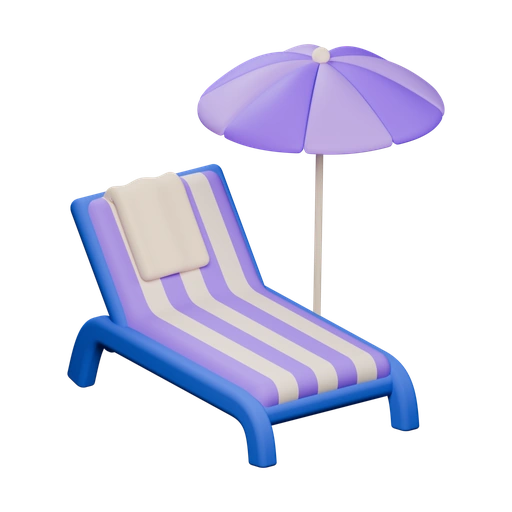
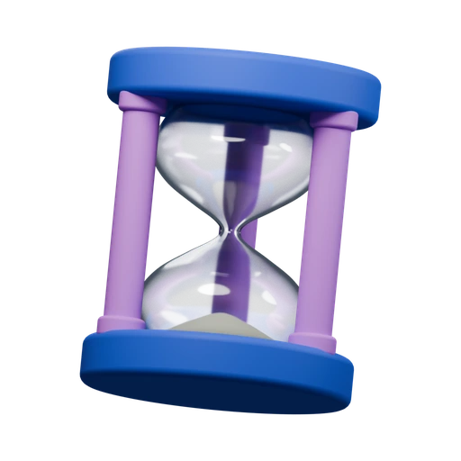
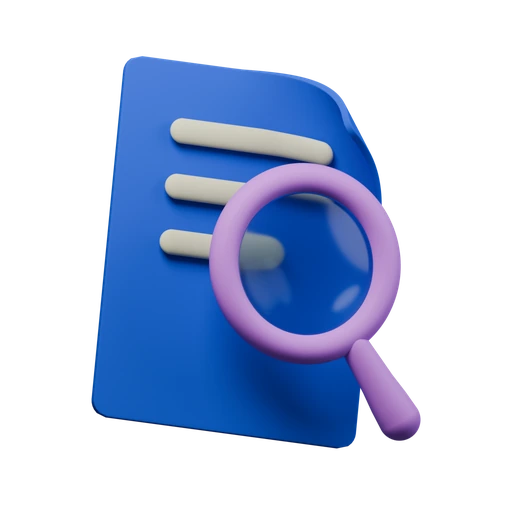
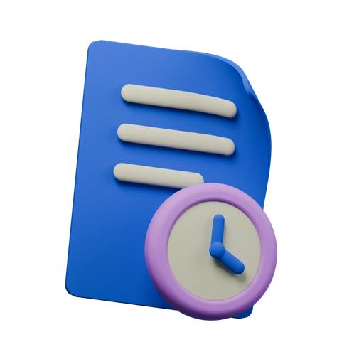
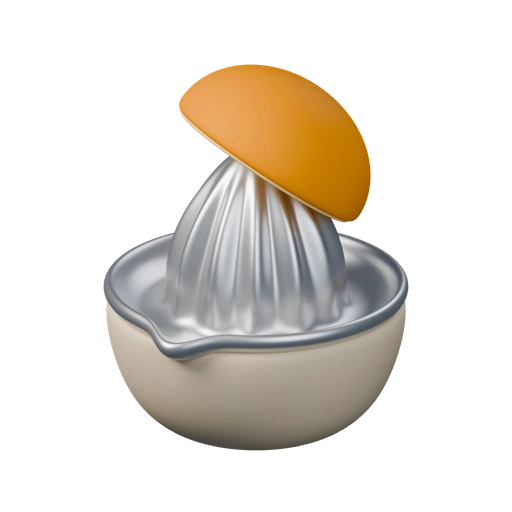
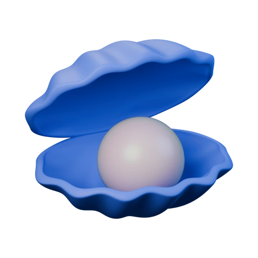
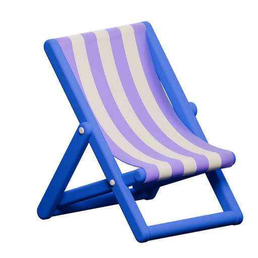
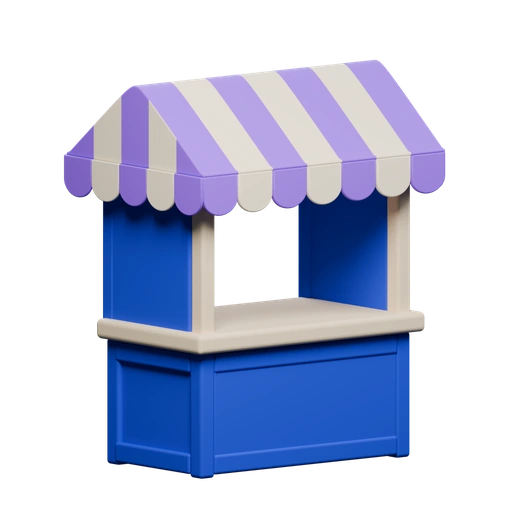

No deposits
In use

- Portfolio → Deposits · No transfer history
- Portfolio → Overview → Deposits · No transfer history
Current selected Hydration artwork, with usage below each icon. Download individual UI exports, high-resolution PNGs or editable Blender sources. The pearl shell is used in the Portfolio Dashboard design. The citrus press is ready for future use.








